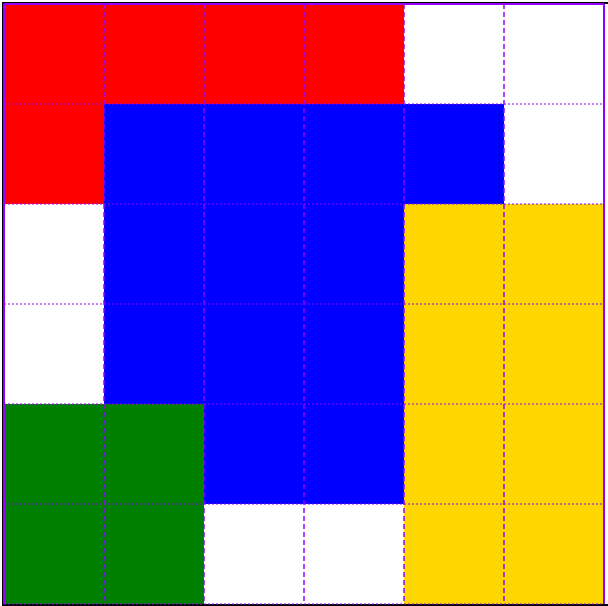

This was our assignment to format a Valentine's Day website without changing the HTML portion of it. It was a lot of fun! We got to see a lot of different styles that people chose to do.
The Apostle Spotlight activity helped me learn more about grids and how they work.


A fun and really helpful activity was the Positioning Exercise. It helped me to feel a lot more comfortable with CSS.
And the Favorite Devotional activity also helped me reflect on some important things that I have learned in different devotionals. It also helped me learn about tables.